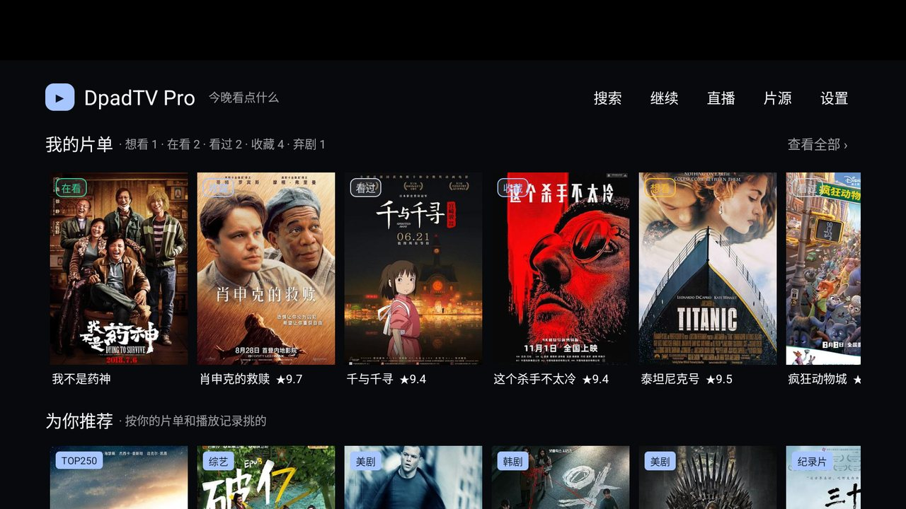
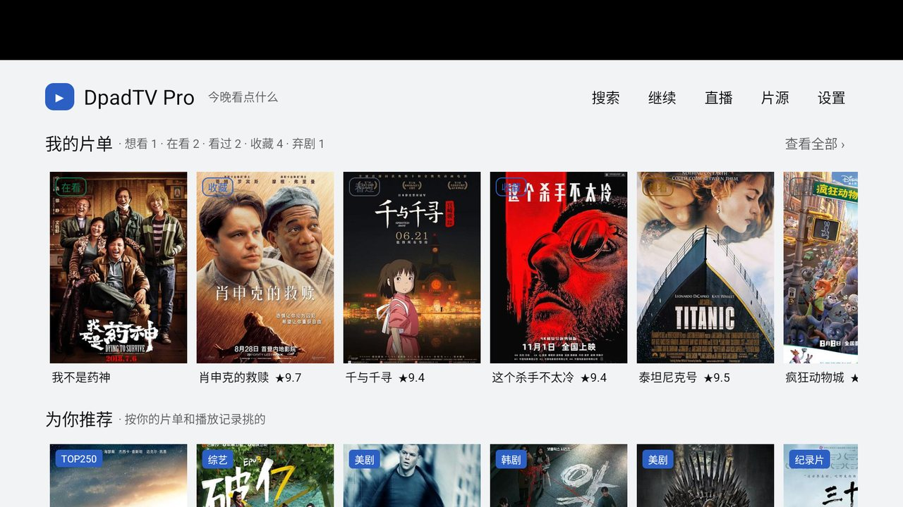
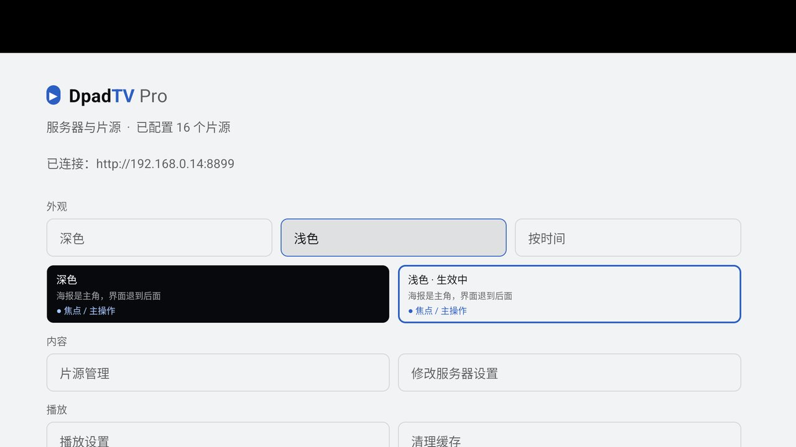
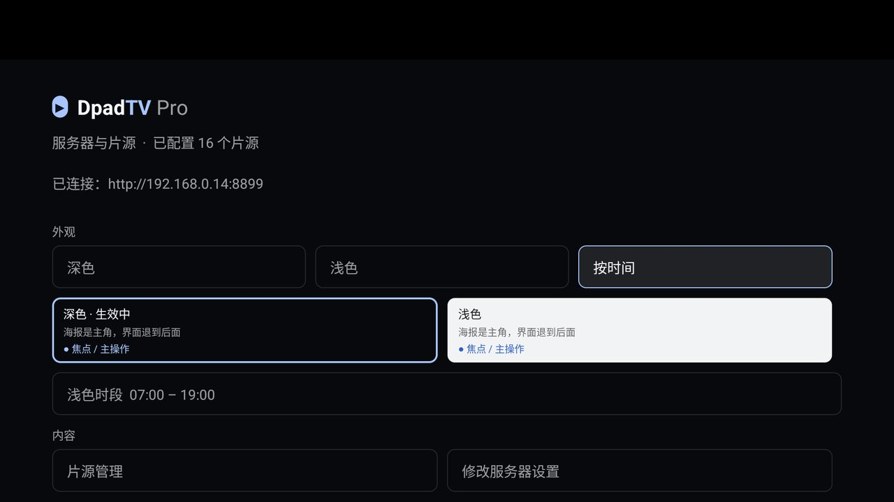
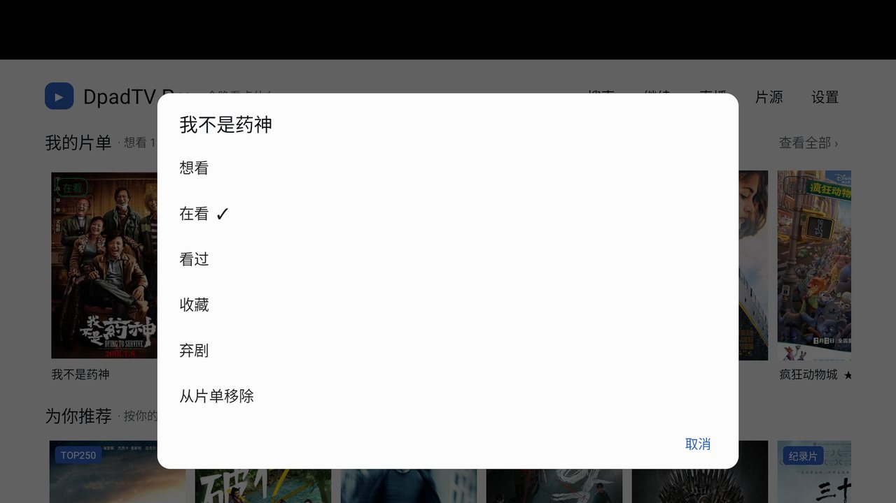
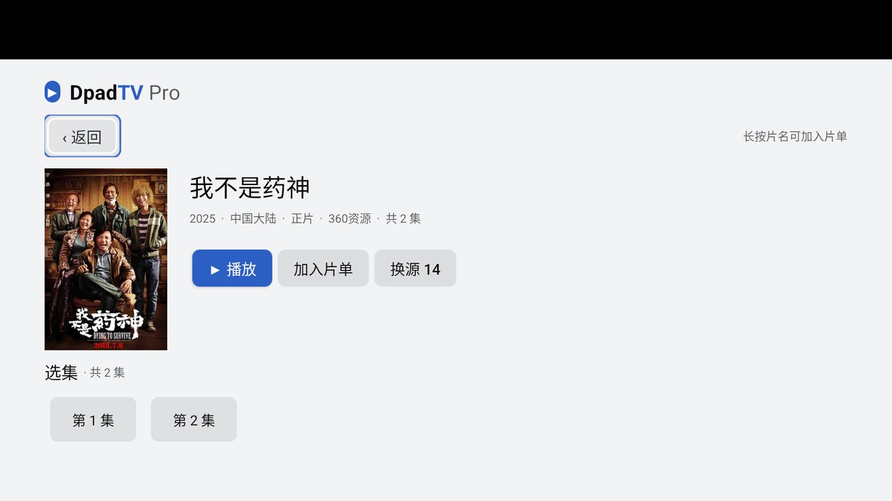

Aerial 深色为基线，浅色是同色相的另一极 · 基线 feature/collections@bda7c63 · 电视只安装，未做实机测试
cmd uimode night → no，dumpsys uimode → mNightModeLocked=true。系统恒浅色且改不了。
单色环压亮海报只有 1.04:1（等于隐形）。环画在内容图上，换个主题色救不了。
→ accent 2dp + 对向 halo 2dp18 处 private val ACCENT = Theme.ACCENT，换肤对已建界面完全无效。
两次实测否决：浅色 muted 沿用 62% 时在玻璃二档上只有 4.48（差 0.02），提到 66%；浅色 accent 候选 #3A6FE0 只有 4.18，已排除。





PosterActions 的第 27 处，已修）
surfaces（跟随主题）/ onImage（恒定：幕布、压图的字、播放器控制条、焦点 halo、二维码）/ status（语义色两套明度）。Theme.INK 等 109 处一行没改，只把 val 换成 get()；SURFACE/PANEL 直接映射到 glass1/glass2。glass() scrimTop/Bottom() edgeFade() focusRing()，新代码不许再写十六进制。syncTheme()；触发点 = 设置页选模式 / 时间到点 / 时间·时区变更广播 / onResume。showSetup()，焦点回到「外观」。start == end 视为非法 → 恒深色。Handler.postDelayed 到下一个边界 + 1s；时间/时区变更由动态广播纠正；onResume 再补一次（后台放几天也能纠回来）。java.time 会在老设备上崩。PosterActions.kt 只有 61 行、一行 Builder(host)，第一次验收就是它漏成深底。Theme.Material.Light.Dialog.Alert，否则单选列表会「深底深字」。Theme.BG：ShelvesScreen 里一行 parseColor("#0b1220") 就让整个首页停在旧配色上（截图当场抓到）。| 项 | 处置 | 理由 |
|---|---|---|
| 首帧窗口底 | 统一深色 | windowBackground 由系统选，app 内模式它不知道；浅色下闪一帧深色比白闪柔和，彻底解决要自定义 Splash。 |
| 系统输入法 | 跟随系统 | 键盘是系统的，深色主题下调出浅色键盘会突兀，无解。 |
| 播放器控制条 | 不跟随 | 对比度基准是视频画面；浅色白玻璃在亮场景里会消失。 |
| 二维码 | 永远深码浅底 | 反色码在中低端手机扫码器上识别失败，不是审美问题。 |
| Aerial 逐屏改造 | 本轮不动 | hero 幕布、edgeFade、三级字号只是备好了工厂，逐屏仍按 AERIAL-PLAN.md 的 P1/P2 走。 |
docs/THEME-PLAN.md
电视只安装 · 未做实机测试 · 旧 pro 已卸载并回填 prefs